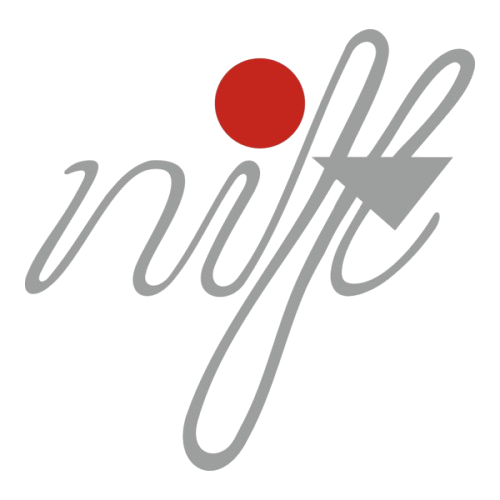

Yara Communications
Jan–Feb 2024 (2 months)
Worked in the Art and Design team for campaigns and advertisement shoots, contributing to creative direction and visual communication strategies.
FREELANCING
Since 2024
Independent freelance projects in branding, packaging, and brand collaterals — from concept creation to final visual systems, helping emerging brands establish strong visual identities.

Social Media Team — NIFT
2023
Worked as a photographer for the official social media team, capturing concept-driven narratives that strengthened the institute’s online presence.
President — Adventure & Photography Club, NIFT
2023–2024
Led the student council’s creative initiatives, curated photography events, and developed the visual identity for the club through art direction and teamwork.